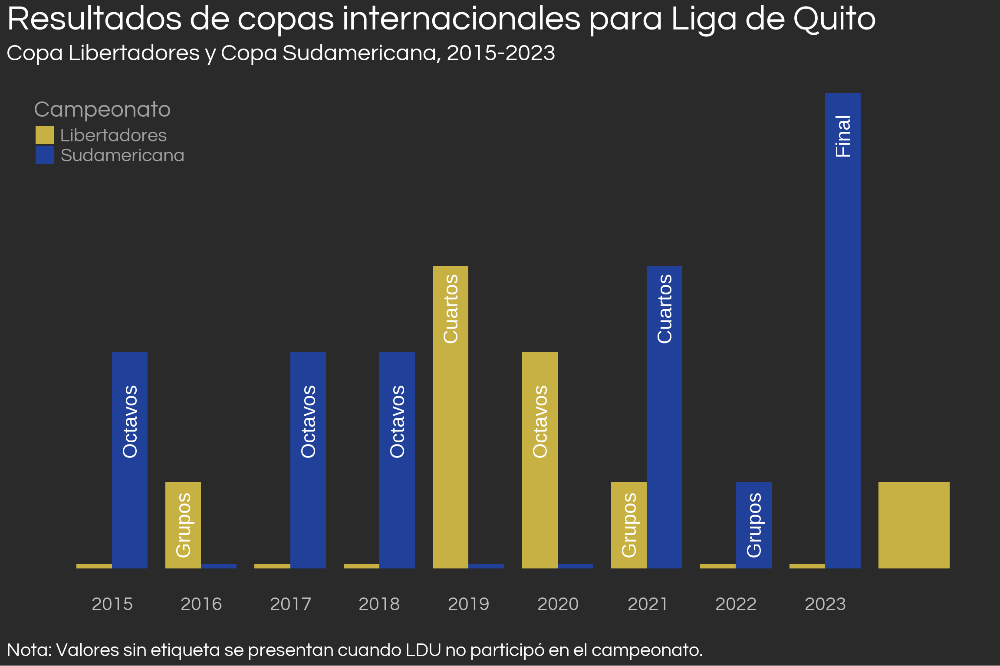

Liga Deportiva Universitaria demuestra una vez más su potencial internacional pasando a la final de la Copa Sudamericana 2023. En este post, hago un intento de football analytics mediante… Imagen generada con inteligencia artificial.
spanish
ecuador
football
data viz
R
Author
Daniel Sánchez
Published
October 26, 2023
Después de casi 14 años desde su última final en un campeonato internacional, Liga Deportiva Universitaria de Quito (LDU) selló su pase a la final de la Copa Sudamericana (el segundo campeonato más importante del fútbol de clubes en Sudamérica). El triunfo de Liga no viene fácil: aunque se ganó la fama del Rey de Copas por los cuatro títulos internacionales ganados durante 2007-2010 (incluyendo la Copa Libertadores, el título más importante de América, nunca antes ganado por otro equipo ecuatoriano), al equipo le ha costado restaurar su gloria desde entonces. El 28 de Octubre Liga promete desempolvar el trono en Ponceano, el barrio de Quito donde se encuentra el Estadio Rodrigo Paz Delgado, la Casa Blanca. En homenaje al equipo y en la misma línea de los otros artículos de este blog, en este post reviso la trayectoria de Liga en la Copa Sudamericana mediante.
# Loop para extraer informacion-copa-sudamericanayears <-seq(2014, 2022)sudamericana <-list()for (i in years){ sudamericana[[which(years == i)]] <-fb_league_stats(gender ='M',season_end_year = i,team_or_player ='team',non_dom_league_url ="https://fbref.com/en/comps/205/history/Copa-Sudamericana-Seasons",stat_type ='standard',country =NA,tier =NA)}# Extraer como un solo df y prepararsudamericana_df <-bind_rows(sudamericana) %>% janitor::clean_names() %>%mutate(year =case_when( url %>%str_like('%2014%') ~2014, url %>%str_like('%2015%') ~2015, url %>%str_like('%2016%') ~2016, url %>%str_like('%2017%') ~2017, url %>%str_like('%2018%') ~2018, url %>%str_like('%2019%') ~2019, url %>%str_like('%2020%') ~2020, url %>%str_like('%2021%') ~2021, url %>%str_like('%2022%') ~2022, ),country =str_sub(squad, start =1, end =2) %>%str_to_upper(),team =str_sub(squad, start =4, end =-1)) %>%select(-squad)# Filtrar para entradas de LDUsudamericana_ldu <- sudamericana_df %>%filter(team =='LDU de Quito')# Extraer informacion de Copa Libertadores libertadores <-list()for (i in years){ libertadores[[which(years == i)]] <-fb_league_stats(gender ='M',season_end_year = i,team_or_player ='team',non_dom_league_url ="https://fbref.com/en/comps/14/history/Copa-Libertadores-Seasons",stat_type ='standard',country =NA,tier =NA)}# Extraer como df y prepararlibertadores_df <-bind_rows(libertadores) %>% janitor::clean_names() %>%mutate(year =case_when( url %>%str_like('%2014%') ~2014, url %>%str_like('%2015%') ~2015, url %>%str_like('%2016%') ~2016, url %>%str_like('%2017%') ~2017, url %>%str_like('%2018%') ~2018, url %>%str_like('%2019%') ~2019, url %>%str_like('%2020%') ~2020, url %>%str_like('%2021%') ~2021, url %>%str_like('%2022%') ~2022, ),country =str_sub(squad, start =1, end =2) %>%str_to_upper(),team =str_sub(squad, start =4, end =-1)) %>%select(-squad)# Filtrar para entradas de LDUlibertadores_ldu <- libertadores_df %>%filter(team =='LDU de Quito')# Extraemos datos de partidos de Copa Sudamericana y Copa Libertadores desde 2014libertadores_matches_raw <-load_match_comp_results('Copa Libertadores de América')sudamericana_matches_raw <-load_match_comp_results('Copa Sudamericana')# Preparar datos de Copa Libertadoreslibertadores_matches <- libertadores_matches_raw %>% janitor::clean_names() %>%transmute(competition_name =iconv(competition_name, from ="UTF-8", to ="latin1"),year = season_end_year, round,round_number =case_when( round =='First stage'~1, round %in%c('Second stage', 'Group stage') ~2, round =='Knockout round play-offs'~3, round =='Round of 16'~4, round =='Quarter-finals'~5, round =='Semi-finals'~6, round %in%c('Final', 'Finals') ~7 ), day, date, time,home_team_country =str_sub(home, start =-2) %>%str_to_upper(),home_team_name =str_sub(home, end =-4), home_goals,away_team_country =str_sub(away, start =1, end =2) %>%str_to_upper(),away_team_name =str_sub(away, start =4, end =-1), away_goals,result =case_when( home_goals > away_goals ~'home_win', home_goals < away_goals ~'away_win', home_goals == away_goals ~NA),match_winner =case_when( home_goals > away_goals ~ home_team_name, home_goals < away_goals ~ away_team_name, home_goals == away_goals ~'none-draw'),leg =case_when( notes %>%str_like('%Leg 1%') ~'leg_1', notes %>%str_like('%Leg 2%') ~'leg_2',TRUE~NA ),penalty_kicks =if_else(notes %>%str_like('%penalties%'), TRUE, FALSE),extra_time =if_else(notes %>%str_like('%extra time%'), TRUE, FALSE), venue, attendance, referee, notes)# Preparar datos de Copa Sudamericanasudamericana_matches <- sudamericana_matches_raw %>% janitor::clean_names() %>%transmute(competition_name,year = season_end_year, round,round_number =case_when( round =='First stage'~1, round %in%c('Second stage', 'Group stage') ~2, round =='Knockout round play-offs'~3, round =='Round of 16'~4, round =='Quarter-finals'~5, round =='Semi-finals'~6, round %in%c('Final', 'Finals') ~7 ), day, date, time,home_team_country =str_sub(home, start =-2) %>%str_to_upper(),home_team_name =str_sub(home, end =-4), home_goals,away_team_country =str_sub(away, start =1, end =2) %>%str_to_upper(),away_team_name =str_sub(away, start =4, end =-1), away_goals,result =case_when( home_goals > away_goals ~'home_win', home_goals < away_goals ~'away_win', home_goals == away_goals ~NA),match_winner =case_when( home_goals > away_goals ~ home_team_name, home_goals < away_goals ~ away_team_name, home_goals == away_goals ~'none-draw'),leg =case_when( notes %>%str_like('%Leg 1%') ~'leg_1', notes %>%str_like('%Leg 2%') ~'leg_2',TRUE~NA ),penalty_kicks =if_else(notes %>%str_like('%penalties%'), TRUE, FALSE),extra_time =if_else(notes %>%str_like('%extra time%'), TRUE, FALSE), venue, attendance, referee, notes)# Filtrar para datos de LDU en Copa Libertadores solamentelibertadores_matches_ldu <- libertadores_matches %>%filter(home_team_name =='LDU de Quito'| away_team_name =='LDU de Quito')# Obtener la ultima etapa alcanzada para cada año de LDUldu_stage_reached_libertadores <- libertadores_matches_ldu %>%group_by(year) %>%summarise(stage_reached_libertadores =max(round_number, na.rm = T))# Filtrar para datos de LDU en Copa Sudamericana solamentesudamericana_matches_ldu <- sudamericana_matches %>%filter(home_team_name =='LDU de Quito'| away_team_name =='LDU de Quito')# Obtener la ultima etapa alcanzada para cada año de LDUldu_stage_reached_sudamericana <- sudamericana_matches_ldu %>%group_by(year) %>%summarise(stage_reached_sudamericana =max(round_number, na.rm = T))# Crear data frame para realizar grafico de resultados LDU en campeonatos internacionales international_results_ldu <-data.frame(year =seq(2014, 2023)) %>%left_join(ldu_stage_reached_libertadores, by ='year') %>%left_join(ldu_stage_reached_sudamericana, by ='year') %>%mutate(stage_reached_libertadores = tidyr::replace_na(stage_reached_libertadores, 0.1),stage_reached_sudamericana = tidyr::replace_na(stage_reached_sudamericana, 0.1),stage_reached =pmax(stage_reached_libertadores, stage_reached_sudamericana),label_libertadores =case_when( stage_reached_libertadores ==0~'No participó', stage_reached_libertadores %>%between(1,3) ~'Fase de grupos', stage_reached_libertadores ==3~'Repechaje', stage_reached_libertadores ==4~'Octavos de final', stage_reached_libertadores ==5~'Cuartos de final', stage_reached_libertadores ==6~'Semifinal', stage_reached_libertadores ==7~'Final'),label_sudamericana =case_when( stage_reached_sudamericana ==0~'No participó', stage_reached_sudamericana %>%between(1,3) ~'Fase de grupos', stage_reached_sudamericana ==3~'Repechaje', stage_reached_sudamericana ==4~'Octavos de final', stage_reached_sudamericana ==5~'Cuartos de final', stage_reached_sudamericana ==6~'Semifinal', stage_reached_sudamericana ==7~'Final') )
Code
# Grafico de resultados LDU en campeonatos internacionalesinternational_results_ldu %>%ggplot(aes(x = year, y = stage_reached_sudamericana)) +geom_col(width =0.8, fill ='white', colour ='#C7B143') +geom_text(aes(label = label_sudamericana), vjust =-0.5, size =3.5) +scale_x_continuous(breaks =seq(2014, 2023, 1)) +labs(x ='',y ='',title ='Resultados de Copa Sudamericana')+ theme_daniel+theme(axis.line.y =element_blank(),axis.text.y =element_blank())

Source Code
---title: "El trono en Ponceano: "author: "Daniel Sánchez"date: "2023-10-26"description: "Liga Deportiva Universitaria demuestra una vez más su potencial internacional pasando a la final de la Copa Sudamericana 2023. En este post, hago un intento de *football analytics* mediante... Imagen generada con inteligencia artificial."categories: [spanish, ecuador, football, data viz, R]csl: ../../econometrics.cslimage: ldu_thumb.jpegdraft: trueknitr: opts_chunk: message: false warning: false echo: true include: trueformat: html: code-fold: true code-tools: true code-summary: "Show the code" code-overflow: wrap---Después de casi 14 años desde su última final en un campeonato internacional, Liga Deportiva Universitaria de Quito (LDU) selló su pase a la final de la Copa Sudamericana (el segundo campeonato más importante del fútbol de clubes en Sudamérica). El triunfo de Liga no viene fácil: aunque se ganó la fama del *Rey de Copas* por los cuatro títulos internacionales ganados durante 2007-2010 (incluyendo la Copa Libertadores, el título más importante de América, nunca antes ganado por otro equipo ecuatoriano), al equipo le ha costado restaurar su gloria desde entonces. El 28 de Octubre Liga promete desempolvar el trono en Ponceano, el barrio de Quito donde se encuentra el Estadio Rodrigo Paz Delgado, la *Casa Blanca*. En homenaje al equipo y en la misma línea de los otros artículos de este blog, en este post reviso la trayectoria de Liga en la Copa Sudamericana mediante.```{r}#| label: setup# Cargar libreriaslibrary(worldfootballR)library(dplyr)library(stringr)library(tidyr)library(ggplot2)library(ggthemes)library(showtext)# Definir tema basefont_add_google("Questrial", family ="Questrial")showtext_auto()theme_daniel<-theme_hc(style ='darkunica',base_family ='Questrial',base_size =40) +theme(axis.line.y =element_line(colour ='white'),axis.line.x =element_blank(),panel.grid.major.y =element_blank(),panel.grid.major.x =element_blank(),plot.caption =element_text(hjust =0, face ='italic'),plot.title.position ='plot',plot.caption.position ='plot',plot.subtitle =element_text(lineheight =0.5, vjust =0.5),axis.ticks =element_blank(),plot.title =element_text(size =60),axis.text =element_text(colour ='gray'))``````{r}#| label: extraccion-datos# Loop para extraer informacion-copa-sudamericanayears <-seq(2014, 2022)sudamericana <-list()for (i in years){ sudamericana[[which(years == i)]] <-fb_league_stats(gender ='M',season_end_year = i,team_or_player ='team',non_dom_league_url ="https://fbref.com/en/comps/205/history/Copa-Sudamericana-Seasons",stat_type ='standard',country =NA,tier =NA)}# Extraer como un solo df y prepararsudamericana_df <-bind_rows(sudamericana) %>% janitor::clean_names() %>%mutate(year =case_when( url %>%str_like('%2014%') ~2014, url %>%str_like('%2015%') ~2015, url %>%str_like('%2016%') ~2016, url %>%str_like('%2017%') ~2017, url %>%str_like('%2018%') ~2018, url %>%str_like('%2019%') ~2019, url %>%str_like('%2020%') ~2020, url %>%str_like('%2021%') ~2021, url %>%str_like('%2022%') ~2022, ),country =str_sub(squad, start =1, end =2) %>%str_to_upper(),team =str_sub(squad, start =4, end =-1)) %>%select(-squad)# Filtrar para entradas de LDUsudamericana_ldu <- sudamericana_df %>%filter(team =='LDU de Quito')# Extraer informacion de Copa Libertadores libertadores <-list()for (i in years){ libertadores[[which(years == i)]] <-fb_league_stats(gender ='M',season_end_year = i,team_or_player ='team',non_dom_league_url ="https://fbref.com/en/comps/14/history/Copa-Libertadores-Seasons",stat_type ='standard',country =NA,tier =NA)}# Extraer como df y prepararlibertadores_df <-bind_rows(libertadores) %>% janitor::clean_names() %>%mutate(year =case_when( url %>%str_like('%2014%') ~2014, url %>%str_like('%2015%') ~2015, url %>%str_like('%2016%') ~2016, url %>%str_like('%2017%') ~2017, url %>%str_like('%2018%') ~2018, url %>%str_like('%2019%') ~2019, url %>%str_like('%2020%') ~2020, url %>%str_like('%2021%') ~2021, url %>%str_like('%2022%') ~2022, ),country =str_sub(squad, start =1, end =2) %>%str_to_upper(),team =str_sub(squad, start =4, end =-1)) %>%select(-squad)# Filtrar para entradas de LDUlibertadores_ldu <- libertadores_df %>%filter(team =='LDU de Quito')# Extraemos datos de partidos de Copa Sudamericana y Copa Libertadores desde 2014libertadores_matches_raw <-load_match_comp_results('Copa Libertadores de América')sudamericana_matches_raw <-load_match_comp_results('Copa Sudamericana')# Preparar datos de Copa Libertadoreslibertadores_matches <- libertadores_matches_raw %>% janitor::clean_names() %>%transmute(competition_name =iconv(competition_name, from ="UTF-8", to ="latin1"),year = season_end_year, round,round_number =case_when( round =='First stage'~1, round %in%c('Second stage', 'Group stage') ~2, round =='Knockout round play-offs'~3, round =='Round of 16'~4, round =='Quarter-finals'~5, round =='Semi-finals'~6, round %in%c('Final', 'Finals') ~7 ), day, date, time,home_team_country =str_sub(home, start =-2) %>%str_to_upper(),home_team_name =str_sub(home, end =-4), home_goals,away_team_country =str_sub(away, start =1, end =2) %>%str_to_upper(),away_team_name =str_sub(away, start =4, end =-1), away_goals,result =case_when( home_goals > away_goals ~'home_win', home_goals < away_goals ~'away_win', home_goals == away_goals ~NA),match_winner =case_when( home_goals > away_goals ~ home_team_name, home_goals < away_goals ~ away_team_name, home_goals == away_goals ~'none-draw'),leg =case_when( notes %>%str_like('%Leg 1%') ~'leg_1', notes %>%str_like('%Leg 2%') ~'leg_2',TRUE~NA ),penalty_kicks =if_else(notes %>%str_like('%penalties%'), TRUE, FALSE),extra_time =if_else(notes %>%str_like('%extra time%'), TRUE, FALSE), venue, attendance, referee, notes)# Preparar datos de Copa Sudamericanasudamericana_matches <- sudamericana_matches_raw %>% janitor::clean_names() %>%transmute(competition_name,year = season_end_year, round,round_number =case_when( round =='First stage'~1, round %in%c('Second stage', 'Group stage') ~2, round =='Knockout round play-offs'~3, round =='Round of 16'~4, round =='Quarter-finals'~5, round =='Semi-finals'~6, round %in%c('Final', 'Finals') ~7 ), day, date, time,home_team_country =str_sub(home, start =-2) %>%str_to_upper(),home_team_name =str_sub(home, end =-4), home_goals,away_team_country =str_sub(away, start =1, end =2) %>%str_to_upper(),away_team_name =str_sub(away, start =4, end =-1), away_goals,result =case_when( home_goals > away_goals ~'home_win', home_goals < away_goals ~'away_win', home_goals == away_goals ~NA),match_winner =case_when( home_goals > away_goals ~ home_team_name, home_goals < away_goals ~ away_team_name, home_goals == away_goals ~'none-draw'),leg =case_when( notes %>%str_like('%Leg 1%') ~'leg_1', notes %>%str_like('%Leg 2%') ~'leg_2',TRUE~NA ),penalty_kicks =if_else(notes %>%str_like('%penalties%'), TRUE, FALSE),extra_time =if_else(notes %>%str_like('%extra time%'), TRUE, FALSE), venue, attendance, referee, notes)# Filtrar para datos de LDU en Copa Libertadores solamentelibertadores_matches_ldu <- libertadores_matches %>%filter(home_team_name =='LDU de Quito'| away_team_name =='LDU de Quito')# Obtener la ultima etapa alcanzada para cada año de LDUldu_stage_reached_libertadores <- libertadores_matches_ldu %>%group_by(year) %>%summarise(stage_reached_libertadores =max(round_number, na.rm = T))# Filtrar para datos de LDU en Copa Sudamericana solamentesudamericana_matches_ldu <- sudamericana_matches %>%filter(home_team_name =='LDU de Quito'| away_team_name =='LDU de Quito')# Obtener la ultima etapa alcanzada para cada año de LDUldu_stage_reached_sudamericana <- sudamericana_matches_ldu %>%group_by(year) %>%summarise(stage_reached_sudamericana =max(round_number, na.rm = T))# Crear data frame para realizar grafico de resultados LDU en campeonatos internacionales international_results_ldu <-data.frame(year =seq(2014, 2023)) %>%left_join(ldu_stage_reached_libertadores, by ='year') %>%left_join(ldu_stage_reached_sudamericana, by ='year') %>%mutate(stage_reached_libertadores = tidyr::replace_na(stage_reached_libertadores, 0.1),stage_reached_sudamericana = tidyr::replace_na(stage_reached_sudamericana, 0.1),stage_reached =pmax(stage_reached_libertadores, stage_reached_sudamericana),label_libertadores =case_when( stage_reached_libertadores ==0~'No participó', stage_reached_libertadores %>%between(1,3) ~'Fase de grupos', stage_reached_libertadores ==3~'Repechaje', stage_reached_libertadores ==4~'Octavos de final', stage_reached_libertadores ==5~'Cuartos de final', stage_reached_libertadores ==6~'Semifinal', stage_reached_libertadores ==7~'Final'),label_sudamericana =case_when( stage_reached_sudamericana ==0~'No participó', stage_reached_sudamericana %>%between(1,3) ~'Fase de grupos', stage_reached_sudamericana ==3~'Repechaje', stage_reached_sudamericana ==4~'Octavos de final', stage_reached_sudamericana ==5~'Cuartos de final', stage_reached_sudamericana ==6~'Semifinal', stage_reached_sudamericana ==7~'Final') )``````{r}#| label: grafico-resultados#| fig-width: 12#| fig-height: 8# Grafico de resultados LDU en campeonatos internacionalesinternational_results_ldu %>%ggplot(aes(x = year, y = stage_reached_sudamericana)) +geom_col(width =0.8, fill ='white', colour ='#C7B143') +geom_text(aes(label = label_sudamericana), vjust =-0.5, size =3.5) +scale_x_continuous(breaks =seq(2014, 2023, 1)) +labs(x ='',y ='',title ='Resultados de Copa Sudamericana')+ theme_daniel+theme(axis.line.y =element_blank(),axis.text.y =element_blank())```